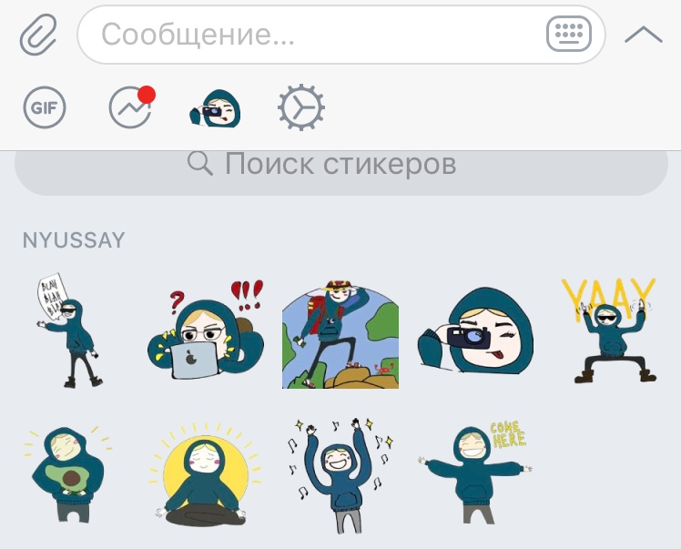
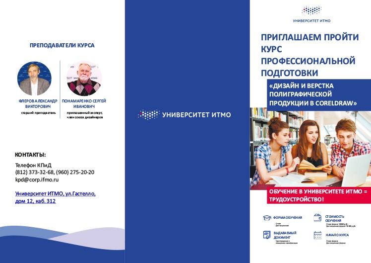

Стикерпак "Nyussay" на платформу Telegram
Создано 10 стикеров, расположенных по всему сайту. Программа Adobe Illustrator
Буклет для курса профессиональной подготовки университета ИТМО в три изгиба
Использовалась палитра PANTONE для печати. Программа Corel DRAW и Photoshop для корректной печати изображений
Варианты изготовления логотипа для интернет-магазина пляжной одежды "Тропики близко"
Программа Corel DRAW
Задания в рамках дисциплины "Исследование экосистем веб-языков и веб-технологий"
Исходные заданияXMLT-001
JSON-INTRO
JSIN-001
TERN_001
FUNC_001
FUNC_002
FUNC_003
FUNC_004
FUNC_006
FUNC_007
FUNC_008/b>
FUNC_009
FUNC_010/a>
IEFE
EVNT_002
ASYNC-TASKS
BABL_002